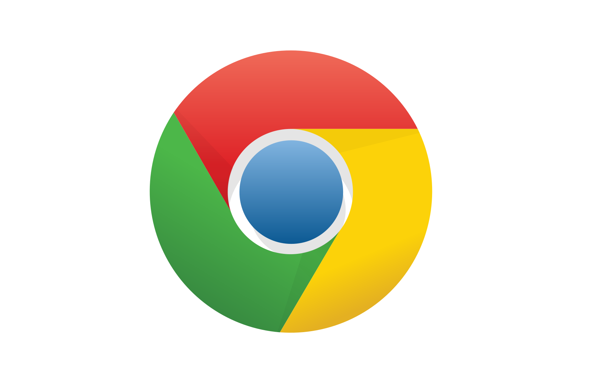
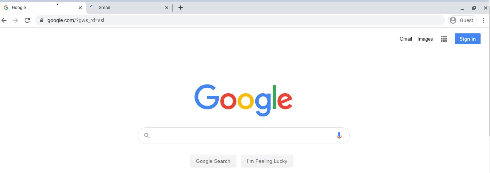
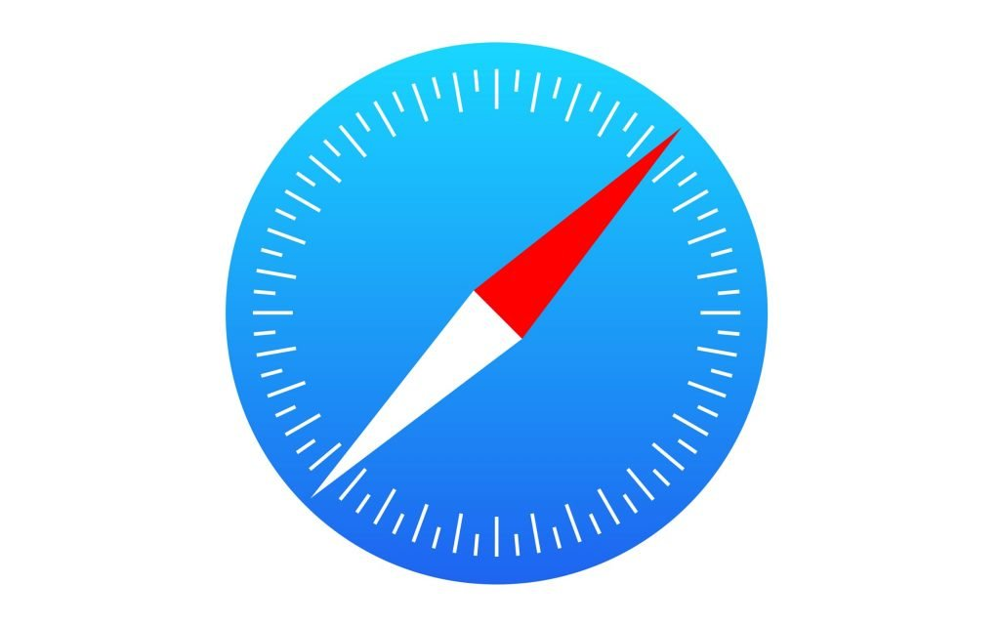
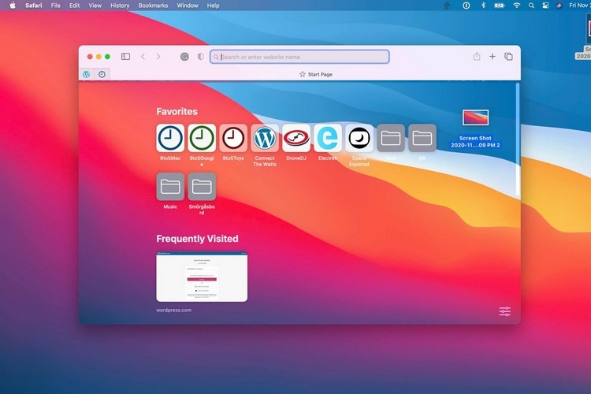
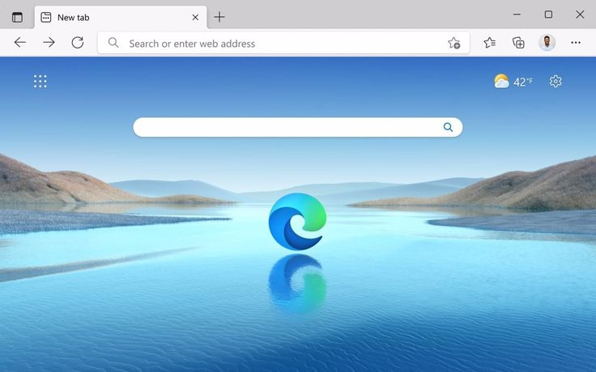

1. Google Chrome Browser


The most popular browser because it is fast and works on every device. It has the most apps and tools you can add to it.
Features:
- Huge Extension Library: Thousands of extra tools to customize your experience.
- Google Sync: Easily shares your bookmarks and passwords across your phone and laptop.
- High Speed: Loads complex websites very quickly.
2. Apple Safari Browser


The best choice for Mac and iPhone users. It is built to save battery life and protect your privacy.
Features:
- Battery Saver: Lets you browse longer on a single charge than other browsers.
- Privacy Protection: Automatically blocks ads and companies from tracking you.
- Apple Ecosystem: Works perfectly with your iCloud and other Apple devices.
3. Microsoft Edge Browser

A very smart browser for Windows users. It is great for organizing work and uses less computer memory than Chrome.
Features:
- AI Assistant: Has a built-in AI to help you summarize pages or write emails.
- Vertical Tabs: You can move your tabs to the side of the screen to see more.
- Resource Saver: Puts unused tabs to "sleep" so your computer stays fast.